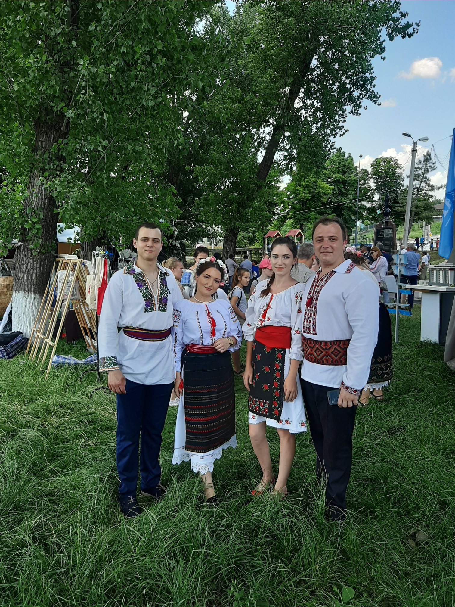

Muzeul Etnografic "Leagănul Veșniciei"
Muzeul Etnografic "Leagănul Veșniciei"
Datinile, poveştile, muzica şi poezia sînt arhivele popoarelor. Cu ele se poate oricînd reconstrui trecutul întunecat. (A.Russo)
„Sezătoarea” este cea care îmbină aproape toate elementele folclorice, dansul, cântecul, pătărania și, de ce nu, plăcintele în cuptor, dar nu în ultimul rând voia bună.


Rusaliile se sarbatoresc dupa o saptamana de la Duminica Mare, in ziua de luni, zi in care se scot nucarii de la stalpii caslor, se uda cu apa si tot in aceasta zi se curata fantanile. Dar mai avem o traditie din strabuni, la acesta sarbatoare se dau de pomana de sufletul morților canuțe cu cireșe , in care se mai punea o căpătâna de usturoi sau 2 cepe verzi.Informatie culeasa de la locuitorii com Gratiesti , D-na Vera Cocieru si D-na Valentina Pascal
Hramul satului
